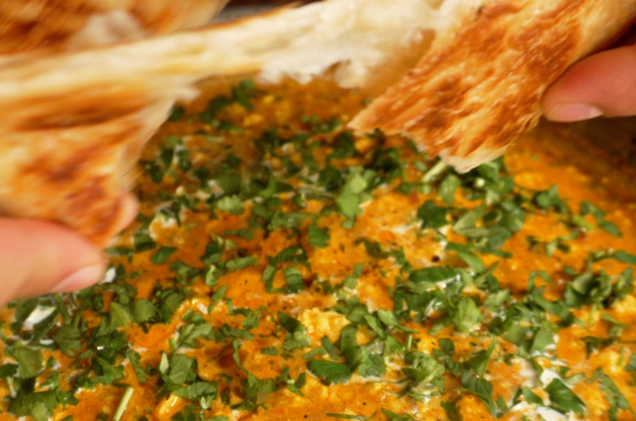

Paneer Bhurji
Home

very easy and delicious vegetarian North Indian dish made with crumbled paneer
Ingredients:
- 375g paneer, crumbled
- 2 large onions, finely chopped
- 1 large tomato, finely chopped
- 5 green chillies, finely chopped (optional, less for less spice)
- 1 tbsp grated ginger
- 5 cloves garlic
- 2 tbsp besan or 1 tbsp cornstarch
- 3 tbsp yogurt
- 1 tsp salt
- 1/2 tsp turmeric powder
- 1 tsp cumin powder
- 1 tsp coriander powder
- 1/2 tsp red chili powder
- 1/2 tsp garam masala
- 2 tbsp oil or butter
- handful of cilantro, chopped
Prep the Veggies and Spice Paste
- Dice 2 large red onions and 1 large tomato.
- Chop up a handful of cilantro and 5 green chillies.
- Mince 5 cloves of garlic and grate 1 tbsp of ginger (if you do not have ginger paste)
- mix all the spices in a bowl and set aside
- Add in a bit of sriracha
- Add in green onions
- Mix Crab and tuna in bowl
- Add in Kewpie Mayonnaise
- Add in a bit of cream cheese (optional)
- Add in a bit of sriracha
Actually Cooking Stuff
- heat oil in pan and add chopped onions, saute until golden
- add ginger garlic paste and green chilies. cook for 1 minute
- add 1 chopped tomato and cook until soft and mushy
- stir in the prepared spice paste. Cook for 2 minutes until the oil separates.
- crumble paneer into pan. mix well and cook for 5 minutes until its coated and creamy
- turn off the heat. add chopped cilantro, mix, and serve hot